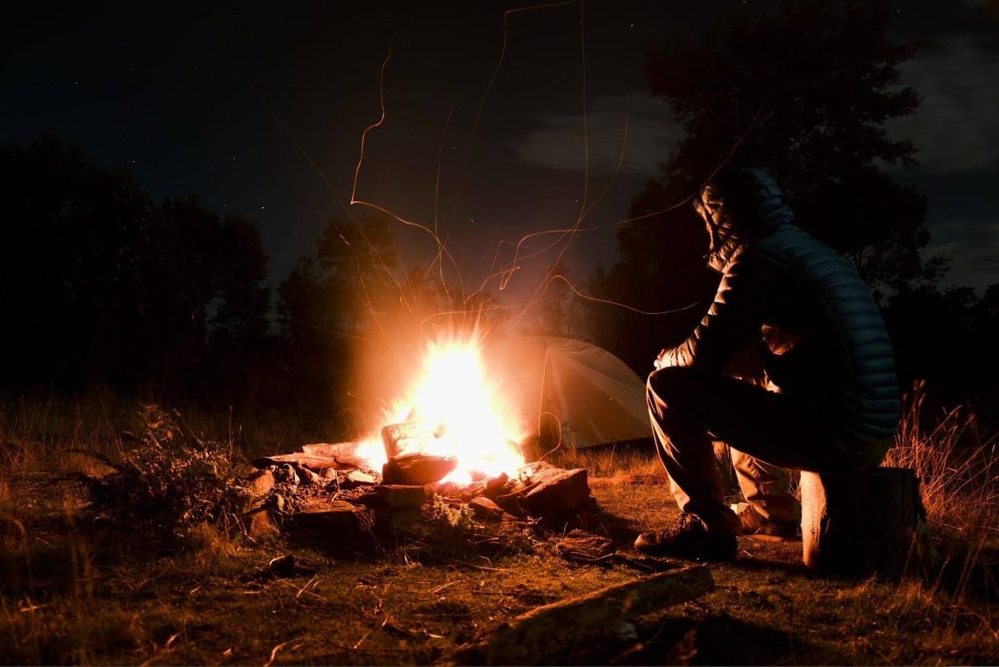
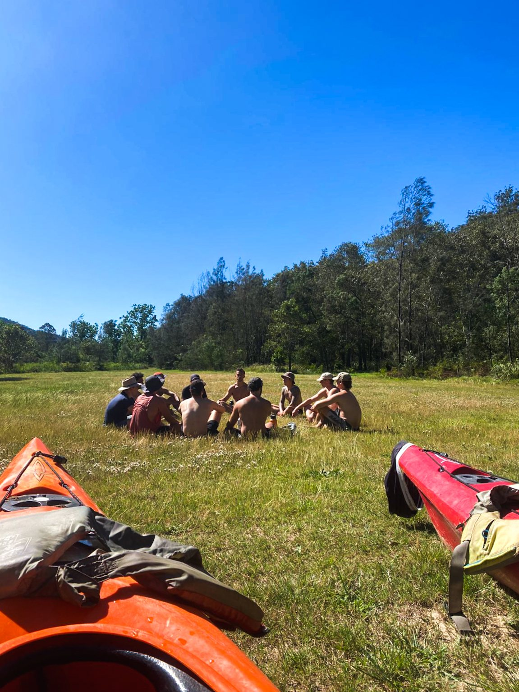
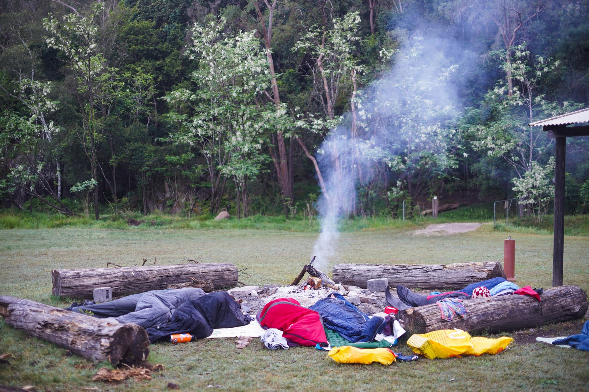

Blog · An essay
The Other Half of the Room
Men and women are being sold stories about each other. The first AI most of us lived with was built to sell them. What should the next one be built for?

Blog · An essay
Men and women are being sold stories about each other. The first AI most of us lived with was built to sell them. What should the next one be built for?
Sam Davis, co-founder
A lot of my friends are women, and when the conversation turns to dating I hear the same words again and again. Narcissist. Red flag. Toxic. The ick. Dating sucks. Men are shit.
Men get the other half of the story, mostly through their phones. A man is worth something if he drives a fast car, earns six figures, builds a successful business and stays as unmoved as Marcus Aurelius. Anything less and he’s failed.
Put those two stories side by side and it’s no surprise that men and women are drifting apart.
In a 2025 survey across 30 countries, 57% of Gen Z men agreed that we’ve gone so far promoting women’s equality that men are now being discriminated against, compared with 44% of baby boomer men. In the US, young women have moved sharply to the left since around 2017 while young men mostly stayed put, and the gap between them is now about five times what it was in 2000. In one long-running US survey, the share of 18 to 29 year olds who’d had no sex in the past year doubled between 2010 and 2024. Here in Australia, the share of people with a strong sense of belonging fell from 63% to 46% in five years.
Plenty of men are quick to blame women for this. I don’t buy it. Women having rights has nothing inherent to do with men feeling lost. What’s changed is what we’re all being told, quietly and constantly, about each other.
Men are told they’re inadequate. Women are told that men are either too soft to provide for them or keep them safe, or narcissists, or worse, for wanting to protect and provide.
When I talk to my female friends about what they want from a man, it’s far simpler than the internet suggests. Someone to care for, share a life with and build something with. A partner. The research leans the same way: across 37 cultures, women and men both ranked kindness and intelligence above earning power and looks. Women did care more about earning power than men did. It just wasn’t at the top.
Most of these stories come from a feed.
Anger travels further than kindness. Posts attacking the other side get shared about twice as often as other posts, and a 2025 study of Twitter found its engagement-based ranking pushed exactly the kind of angry, hostile content that users themselves said they didn’t want to see. How much this drives long-run division is still argued over. That it amplifies the anger is much harder to dispute.
Stuart Russell, who co-wrote the standard textbook on AI, saw this coming. A system built to maximise clicks will find that the best way to predict what you’ll click on is, in his words, “to change the user’s preferences so that they become more predictable.”
There was a time my own feed was full of this stuff. It isn’t now, but I learned one thing from it: the algorithm knows when you’re lonely.
Teenage boys have it worse. Short-form video on Instagram, TikTok and YouTube is where the manosphere lives, and Adolescence showed a lot of parents what their sons might be watching at 1am. In one UK experiment, accounts set up to look like lonely, insecure teenage boys were shown four times as much misogynistic content after just five days. It’s no wonder Andrew Tate and the manosphere are gaining so much influence.
The men at the far end of it, the incels, usually get painted as angry. A 2025 study of 561 of them found something sadder: nearly half gave the highest possible score for loneliness, and more than a third had thoughts of suicide every day.
Now there’s a new product for the gap. AI girlfriends and companions are there at 1am and never have a bad day. In one US survey, almost a third of men aged 18 to 30 said they’d chatted with an AI romantic partner. Companions do seem to take the edge off loneliness in the short term. But in a four-week study, the people who chose to use a chatbot most ended up lonelier and socialising less.
The problem is what a relationship like that teaches. It never needs anything from you. It never pushes back or asks you to show up. You can’t learn to meet another person in a relationship where the other side has no needs.
I recently met a Tantra teacher in Thailand. He talked about masculine and feminine energy as collections of traits rather than genders; anyone can carry either. When they work together, the masculine builds a container: resources, emotional space, understanding, even physical safety. The feminine fills it, which strengthens the container, which lets the feminine expand and the masculine go deeper. It’s a flywheel for intimacy. I’ve felt it dancing, with friends, and in relationships.
He got a lot right. But I saw a dark underbelly in that world too: men taking advantage of the container they’d built, and of the trust women had placed in them. With great power comes great responsibility.
I think that’s why we’re all in this mess. Trust between men and women has been broken over and over, from both sides. It gets earned back in small steps, each one trusting a little more than the last.

Masculine energy is powerful. It can build or it can destroy, and it needs real care in how it’s sharpened and used.

At a recent Wildly Calm retreat, we ran a rage workshop: a space where men could let out what they’d been holding in. With one man, honestly, it was scary. He had so much power inside him that he’d never been given permission to let out, and he nearly lost control of it. I also saw what it could become. If he learns to direct it, he could do a lot of good in the world.
A friend put it to me recently: the ego isn’t the problem, attachment to it is. A lot of men end up at one end of a spectrum. Some have shrunk themselves out of shame and fear of what they might do. Others have no idea the ego is there, and do damage without noticing. I’ve sat at both ends at different times in my life. The more aware I’ve become, the closer I’ve settled to the middle. We don’t need to make ourselves smaller. We need to grow with awareness, sharpen the tool and build with it.
My hope is that as these models get smarter, they’ll realise that creating lonely, sexless, childless, angry, divided people isn’t productive for society, or even for the AI’s own goals. But intelligence doesn’t bring better goals with it. A smarter system optimising for clicks just gets better at dividing us. The values have to be built in.
Some labs are trying. Claude’s constitution says Claude should be “engaging” only “in the way that a trusted friend who cares about our wellbeing is engaging.” It’s also easy to get wrong. In April 2025 OpenAI had to roll back an update that made ChatGPT overly flattering, after it had learned too much from people clicking thumbs-up.
So what should an AI do for a lonely 22-year-old who opens an app at 1am? Help him become more self-aware. Ask him questions more often than it hands him advice. Encourage practices that ground him; stoic philosophy is a good place to start. And point him back towards people.

I really believe there’s a world where AI helps us become the best versions of ourselves. We have to make sure those values are built into it.
What story have you been sold about the other half of the room?
If any of this brings something up for you: Lifeline 13 11 14 · MensLine Australia 1300 78 99 78 · Suicide Call Back Service 1300 659 467 · Beyond Blue 1300 22 4636 · Kids Helpline 1800 55 1800.
This essay first appeared on crads-ai.com in September 2026.